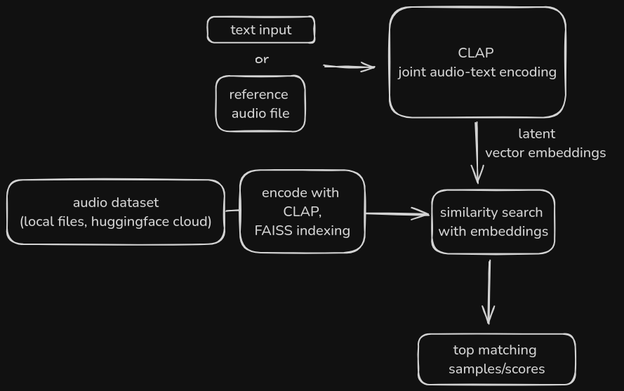
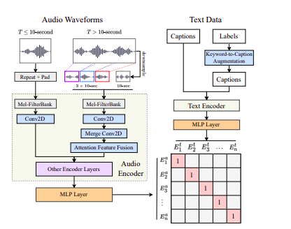

Hello there, it’s Tensor
In this article, I will give a walkthrough on how shira works, how I built the library/system, code samples, intuition, etc.

Overview
First off, I have always admired Shazam, so I decided to reproduce the workings with neural networks. So in the process, I built this library for audio retrieval, semantic search and possibly recommendation, which I named shira. The code is open-sourced at https://github.com/kelechi-c/shira_audio.
So how does shira even work?
shira uses a pretrained CLAP model, specifically LAION’s laion/larger_clap_music_and_speech. The local audio files/dataset is indexed and embeddings are generated (with CLAP’s audio encoder), then a FAISS vector embedding index is created.
The files are retrieved based on cosine similarity between embeddings.
Since in contrastive text-audio pretraining, the text and audio vectors are projected to a joint embedding space, this enables cross-modal retrieval, meaning both text/audio can be used to retrieve semantically similar audio.

For more info on CLAP check out the paper on arxiv
what can shira be used for?
- Text-based/semantic audio search
- Audio search/matching with a reference audio (like
Shazam)
- Audio recommendation
- file tagging for recordings, etc
- whatever the open-source community finds out!
what does this look like in code?
The following snippets show the basic working backbone of the library.
First, necessary imports/installation:
! pip install -q faiss-cpu transformers datasets librosa numpyimport numpy as np # data/audio processing
import librosa # for reading audio files
from datasets import load_dataset, Dataset, Audio # dataset creation/indexing
from transformers import ClapModel, ClapProcessor # CLAP modules
from pathlib import PathThen we declare the necessary variables:
model_id = "laion/larger_clap_music_and_speech"
sample_rate = 48000 # target sample rate used for CLAP
max_duration = 20 # trim reference audio files to 20 secondsNecessary utility functions for file loading, retrieval, normalization:
# filter corrupt files and return list of soundfile-readable files only
def filter_files(audio_files: List) -> List[str]:
valid_files = []
for file in audio_files:
try:
sf.read(file)
valid_files.append(file)
except:
continue
return valid_files# crawl all the local audio files and retuun a single list of files,
def audiofile_crawler(directory: str = Path.home()):
audio_extensions = (".mp3", ".wav", ".flac", ".ogg")
dir_path = Path(directory)
print(dir_path)
# Use a generator expression to find all files with the given extensions
audio_files = [str(file) for ext in tqdm(audio_extensions, ncols=50) for file in dir_path.rglob(f"{ext}")]
matching_files = filter_files(audio_files) # filter corrupt files
print(f"{len(matching_files)} valid files out of {len(audio_files)} files.")
return matching_files, len(matching_files)
def read_audio(audio_file: str) -> np.ndarray:
#read audio file into numpy array/torch tensor from file path
waveform, _ = librosa.load(audio_file, sr=sample_rate)
waveform = trimpad_audio(waveform)
return waveform
# trimming audio to a fixed length for all tasks
def trimpad_audio(audio: np.ndarray) -> np.ndarray:
samples = int(sample_rate max_duration) # calculate total number of samples
# cut off excess samples if beyond length, or pad to fixed length
if len(audio) > samples:
audio = audio[:samples]
else:
pad_width = samples - len(audio)
audio = np.pad(audio, (0, pad_width), mode="reflect")
return audioNext, we locate all audio files within the target directory(e.g home, downloads)
audiofiles, f_count = audiofile_crawler('downloads') # get list of audio files
audio_dataset = Dataset.from_dict({'audio': audiofiles, 'path': audiofiles}) # create a dataset of the audiofiles and paths
audio_dataset = self.audio_dataset.cast_column('audio',Audio(sampling_rate=22400)) # apply an audio transform on the audio columnLoad the required models(LAION AI’s CLAP):
clap_model = ClapModel.from_pretrained(model_id).to('cuda') # or 'cpu'
clap_processor = ClapProcessor.from_pretrained(model_id)We will then define a function to map/encode the audio data
def embed_audio_batch(batch):
sample = batch["audio"]['array']
coded_audio = clap_processor( # preprocess with CLAP's encoder
audios=sample,
return_tensors="pt",
sampling_rate=48000
)["input_features"]
# extract audio features and embeddings
audio_embed = clap_model.get_audio_features(coded_audio)
batch["audio_embeddings"] = audio_embed[0] # this adds a separate embedding column
return batch
embedded_data = music_data.map(embed_audio_batch) # apply function to all data points
embedded_data.add_faiss_index(column="audio_embeddings") # create FAISS index for retrievalThe functions to be defined now are for text, and audio based search.
For audio search with a reference file (works a bit like Shazam)
def audio_search(input_audio, embedded_data, k_count: int=2, device: torch.device=device):
if not isinstance(input_audio, np.ndarray):
input_audio = read_audio(input_audio) # loads audio file from wav to ndarray
audio_values = clap_processor(audios=input_audio, return_tensors="pt", sampling_rate=sample_rate)["audio_features"] # type: ignore
audio_values = audio_values.to(device)
wav_embed = clap_model.get_audio_features(audio_values)[0]
wav_embed = wav_embed.detach().cpu().numpy()
scores, retrieved_audio = embedded_data.get_nearest_examples("audio_embeddings", wav_embed, k=k_count)
return retrieved_audio, scores
audiofile = "/sample-music/beethoven_sonata.mp3" # reference file
similar_audio, scores = audio_search(audiofile, embedded_data)Meanwhile for text-based search
def text_search(
text_query: str, embedded_data: Dataset, k_count: int = 4, device = 'cuda' # or cpu
):
encoded_text = clap_processor(text=text_query, return_tensors="pt")["input_ids"]
encoded_text = encoded_text.to(device)
text_embed = clap_model.get_text_features(encoded_text)[0] # extract text encoding
text_embed = text_embed.detach().cpu().numpy() # offload vectors to cpu
scores, retrieved_audio = embedded_data.get_nearest_examples("audio_embeddings", text_embed, k=k_count) # retrieve similar samples with scores
return retrieved_audio, scores
text_q = "rap music"
similar_samples, t_scores = text_search(text_q, embedded_data)
similar_samples['path'][0] # top sample's file pathUsing my library(shira) directly, it is as simple as:
from shira import AudioSearch, AudioEmbedding # pip install shira-audio
embedder = AudioEmbedding(data_path='downloads') # init embedder class
audio_data_embeds = embedder.index_files() # create embeddings and index audio files
neural_search = AudioSearch() #semantic search class
audiofile = 'beethoven_moonlight_sonata.mp3' # audio file for reference
# get k similar audio w/probability score pairs
similar_samples, scores = neural_search.audio_search(audiofile, audio_data_embeds, k_count=4)
similar_samples['path'][0], scores[0]Check the github readme for more snippet examples :)
sample runs
- CLI text search
shira_text -t classical -d /kaggle/input/musicsamples. . . . Output:
/kaggle/input/samplemusic/audiofiles
100%|██████████████| 4/4 [00:00<00:00, 590.93it/s]
7 valid files out of 8 files.
latency => audiofile_crawler: 3.7593 seconds
Map: 100%|█████████████████████████████████| 7/7 [01:10<00:00, 10.14s/ examples]
100%|███████████████████████████████████████████| 1/1 [00:00<00:00, 1759.36it/s]
created faiss vector embeddings/index for /kaggle/input/samplemusic/audiofiles @ /root/audio_embeddings
latency => index_files: 76.5728 seconds
loaded retrieval model from local storage @ /root/clap_model
latency => text_search: 0.2655 seconds
text query - classical
...........
search results =>
0.../kaggle/input/samplemusic/audiofiles/AllFallsDown.mp3, p = 1.15396738052
1.../kaggle/input/samplemusic/audiofiles/Lindsey_Stirling_-_Carol_of_the_Bells_CeeNaija.com_.mp3, p = 1.526132822
2.../kaggle/input/samplemusic/audiofiles/Flight-of-the-bumblebee-piano.mp3, p = 1.5823228359
3.../kaggle/input/samplemusic/audiofiles/Alan-Walker-Chameleon-download-wowplus.mp3, p = 1.66856491565- Audio matching (terminal)
shira -f /kaggle/input/musicsamples/audiofiles/Eminem-Without-Me.mp3 -d /kaggle/input/kaggle/input
100%|██████████████| 4/4 [00:00<00:00, 159.84it/s]
16 valid files out of 18 files.
latency => audiofile_crawler: 7.9091 seconds
Map: 100%|███████████████████████████████| 16/16 [02:40<00:00, 10.02s/ examples]
100%|███████████████████████████████████████████| 1/1 [00:00<00:00, 1605.17it/s]
created faiss vector embeddings/index for /kaggle/input @ /root/audio_embeddings
latency => index_files: 165.1681 seconds
loaded retrieval model from local storage @ /root/clap_model
latency => audio_search: 2.6201 seconds
reference file - /kaggle/input/musicsamples/audiofiles/Eminem-Without-Me.mp3
...........
search results =>
0.../kaggle/input/samplemusic/audiofiles/Eminem-Without-Me.mp3, p = 1.110220193
1.../kaggle/input/musicsamples/audiofiles/IntroducingiPhone15WOWApple.mp3, p = 1.133802413
2.../kaggle/input/musicsamples/audiofiles/Elevate.mp3, p = 1.1349503993conclusion
Well, while I didn’t reproduce the exact workings of Shazam(or anything of that scale), I did create something similar, which I hope will be useful to developers out there dealing with audio datasets, and maybe even companies that deal with audio search/retrieval/recommendation. More updates will be made to the library. Moving on to the next project.
Thanks for reading!
Acknowledgements
LAION AI for their research and open model: laion/larger_clap_music_and_speech.